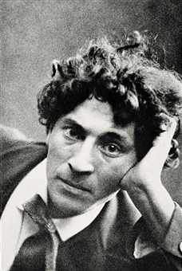

Marc Chagall
Illustrator, Painter(1887–1985)
Marc Chagall was a Belorussian-born French artist whose work generally was based on emotional association rather than traditional pictorial fundamentals.
Art critic Robert Hughes referred to Chagall as "the quintessential Jewish artist of the twentieth century" (though Chagall saw his work as "not the dream of one people but of all humanity"). According to art historian Michael J. Lewis, Chagall was considered to be "the last survivor of the first generation of European modernists". For decades, he "had also been respected as the world's preeminent Jewish artist". Using the medium of stained glass, he produced windows for the cathedrals of Reims and Metz, windows for the UN, and the Jerusalem Windows in Israel. He also did large-scale paintings, including part of the ceiling of the Paris Opéra.
He had two basic reputations, writes Lewis: as a pioneer of modernism and as a major Jewish artist. He experienced modernism's "golden age" in Paris, where "he synthesized the art forms of Cubism, Symbolism, and Fauvism, and the influence of Fauvism gave rise to Surrealism". Yet throughout these phases of his style "he remained most emphatically a Jewish artist, whose work was one long dreamy reverie of life in his native village of Vitebsk." "When Matisse dies," Pablo Picasso remarked in the 1950s, "Chagall will be the only painter left who understands what colour really is".